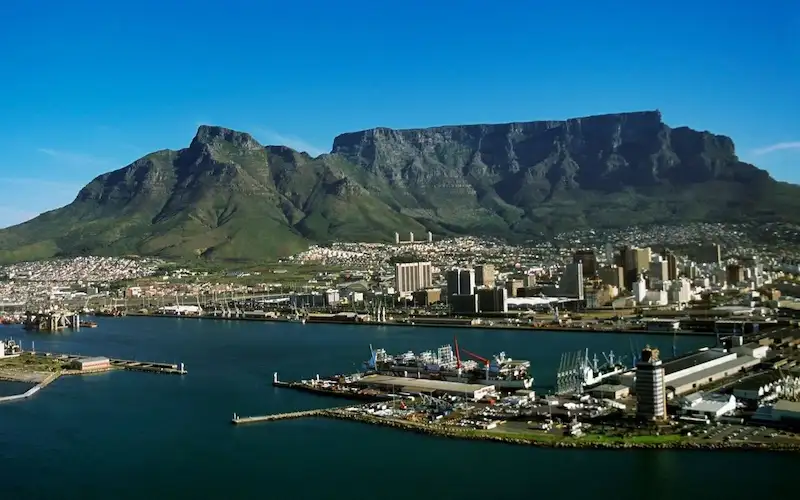
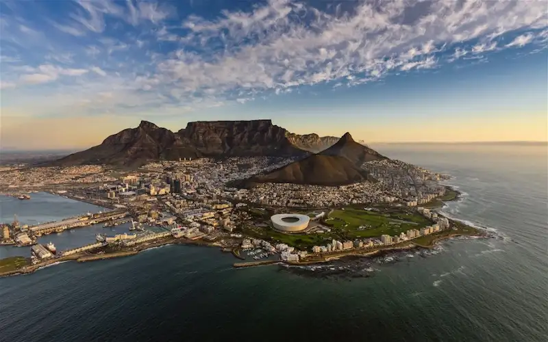

Section 1: Table Montain
Table Mountain is a flat-topped mountain in Cape Town, South Africa, known for its stunning views and rich biodiversity. It is one of the New7Wonders of Nature and a popular destination for hikers and tourists.
Section 2: Attractions
The mountain rises 1,085 meters above sea level and is a prominent feature of the city's skyline. Its unique shape and extensive network of trails make it a symbol of natural beauty and outdoor adventure.
